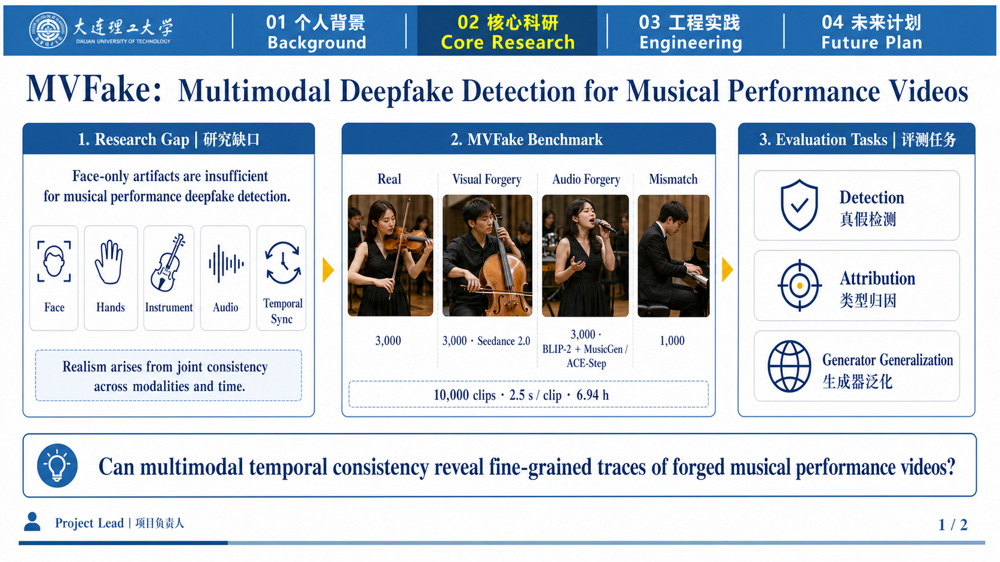

2023.09-present
Dalian University of Technology
Undergraduate student, School of Information and Communication Engineering.
侯宪睿
Undergrad student, School of Information and Communication Engineering, Dalian University of Technology, 2023-present
Intern, ENCODE Lab, School of Engineering, Westlake University
I am an undergraduate student at Dalian University of Technology and an intern at ENCODE Lab, Westlake University. My research interests include audio-video deepfake detection, efficient AI, and inference engines for hybrid linear-attention architectures.
I focus on methods that are technically solid and useful in real systems, especially for long-context inference and multimodal trustworthiness.
Undergraduate student, School of Information and Communication Engineering.
Intern, School of Engineering.
Smart in-vehicle safe driving and emotional AI companionship system.

Research project
A multimodal framework for detecting forged musical performance videos, with dataset construction, evaluation tasks, and cross-modality consistency analysis.
System project
A serving-system project focused on compact recurrent state management for hybrid linear-attention architectures and long-context agent inference.
Email: houxianrui@mail.dlut.edu.cn
Backup email: xianrui.hou22@gmail.com
Other email: 18698059388@163.com
GitHub: github.com/HMartians587
Google Scholar: profile
OpenReview: profile